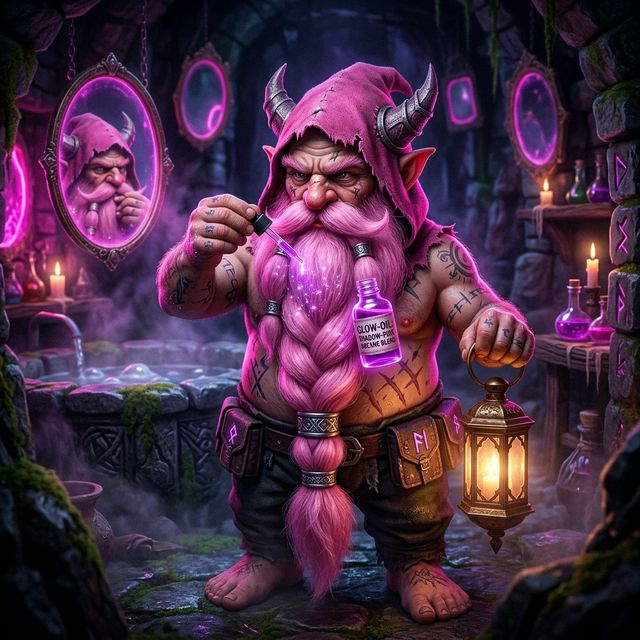
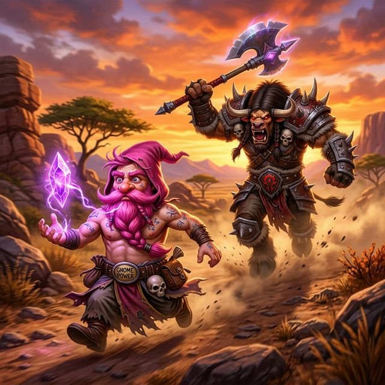
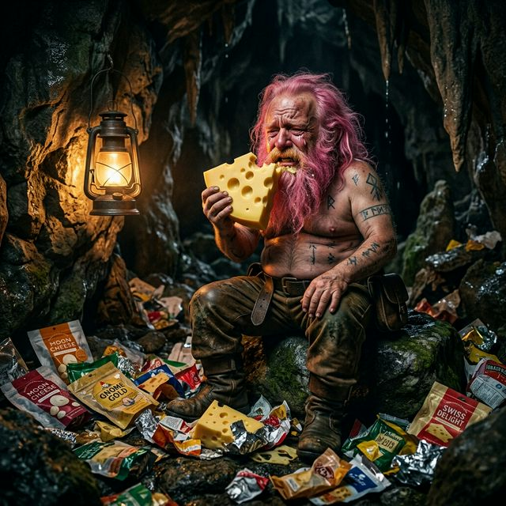
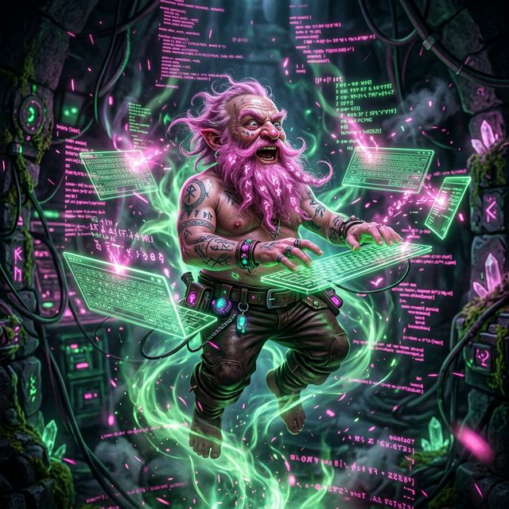
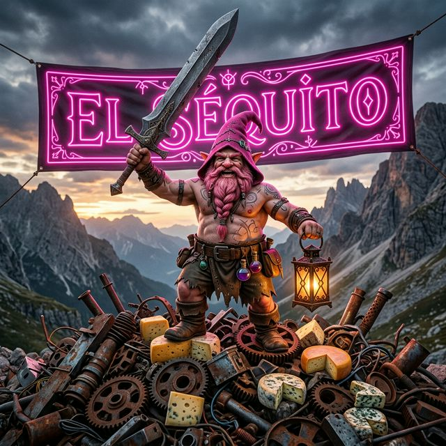

LA OSCURIDAD SE ALZA
El ecosistema táctico definitivo. El clan más temido de Turtle WoW. Bienvenido al Séquito.
Desciende
El ecosistema táctico definitivo. El clan más temido de Turtle WoW. Bienvenido al Séquito.
Desciende

Conocido en el mundo mortal como DarckRovert.
Gnomo Brujo, arquitecto del caos y mente maestra detrás de "El Séquito del Terror". Su intelecto táctico no se mide en puntos de habilidad, sino en líneas de código Lua. Guía al clan desde las sombras con un ojo en el campo de batalla y el otro en la pantalla de compilación. Su barba lo precede. Su leyenda lo sobrevive.
Apaga las luces. Abre una cerveza. Esto es historia.
La historia jamás narrada de cómo una barba rosa, un Tauren violento y tres toneladas de queso de Alterac dieron origen al clan más temido de Turtle WoW.
Mucho antes de que existiera el Séquito del Terror, existía un gnomo. No era un gnomo cualquiera con su casco mecánico y sus gadgets de segunda. Era Elnazzareno, el único ser en Gnomeregan que había alcanzado la iluminación estética a través de las artes oscuras.
Mientras sus compañeros inventaban robots y hacían explotar laboratorios por accidente, Elnazzareno descubrió algo mucho más poderoso: el Tinte Prohibido de las Profundidades del Vacío. Siete años de investigación, cuarenta y tres fracasos, y una vez que casi convirtió su cabello en tentáculos, el resultado fue una barba de un rosa perfectamente obsceno que brillaba incluso en la oscuridad más absoluta.
La capucha también era rosa. Era una elección deliberada. "Si vas a aterrorizar un servidor", solía decir mientras agitaba su lanterna con elegancia, "hazlo con color coordinado".

Era una tarde perfecta en Los Baldíos. El cielo naranja se reflejaba en la arena dorada. Las leónas rugían a lo lejos. Era, en palabras del propio gnomo, "el ambiente ideal para un Grimorio-Gram de perfil". Elnazzareno posicionó su cristal de visión mágica, cuadró la toma, puso sus labios en la posición que él llamaba "el puchero del brujo eterno", y presionó el obturador.
Lo que ocurrió a continuación cambió la historia de Turtle WoW.
De entre las rocas emergió un Tauren. Grande. Muy grande. El tipo de Tauren que en lugar de caminar produce pequeños terremotos locales. Sin saludo, sin presentación, sin la más mínima consideración por el arte fotográfico, este ser colosal lo atacó con su tótem de forma completamente gratuita, dejándole una herida profunda que, lo más importante de todo, arruinó completamente la foto.

Maltratado en cuerpo y en orgullo, Elnazzareno se retiró a una cueva sin decorar al sureste de Ventormenta. No era una cueva bonita. Había humedad. Había murciélagos. Había un olor a pies que ningún encantamiento podía eliminar. Pero había una cosa importantísima: nadie lo conocía ahí.
Consigo llevó: su linterna (fundamental), su espada (por si acaso), y veintisiete raciones de queso de Alterac de Reserva Especial. Pasó los siguientes diecisiete días llorando, comiendo queso, y ocasionalmente agitando su espada hacia la pared gritando "¡NUNCA MÁS, TAUREN MALDITO!" a nadie en particular.
Fue en el decimoctavo trozo de queso, mientras las lágrimas de energía fel caían sobre su teclado mágico, que tuvo la revelación: el conocimiento solo es arma si va acompañado de datos en tiempo real. Ahí, sin camisa, oliendo a queso y con la barba ligeramente desaliñada, comenzó a escribir la primera línea de lo que sería el WCS_Brain.

Con la venganza como combustible y el queso como combustible secundario, Elnazzareno se lanzó al mundo del desarrollo de addons con una intensidad que asustaba incluso a sus propias mascotas. DoTimer fue el primero: para controlar cuándo exactamente sangran los enemigos. BigWigs fue el segundo: para saber cuándo exactamente van a morir todos.
TerrorMeter para medir la destrucción. TerrorSquadAI para que hasta las mascotas pensaran tácticamente. AtlasTW para no perderse. AUX-Trading para financiar la operación. HealBot para que los aliados no murieran de forma inconveniente. Siete addons. Siete armas. Un solo objetivo: que ningún Tauren volviera a arruinar jamás una foto en paz.
Y coronando todo: el WCS_Brain v9.3.1, el framework abismal que unificaba todo el arsenal. La médula espinal de la venganza. El cerebro que nunca dormía. Nacido de la rabia, alimentado por el queso, y escrito sin camisa.

Hoy, Elnazzareno no necesita presentación. Se presenta solo, generalmente con una espada que mide más que él y una linterna que ilumina a todos los que teme. A su alrededor, el Séquito del Terror: un ejército de jugadores que entendieron que la barba rosa no es una debilidad, es una declaración de carácter.
El Tauren de los Baldíos nunca fue encontrado. Se dice que aún vaga por la zona, ocasionalmente deteniendo aventureros para preguntar si conocen a "ese gnomo pequeño con la barba rara que grita sobre fotos". Nadie le responde. Todos saben lo que le pasó la última vez que alguien hizo enojar a Elnazzareno.
La venganza no siempre es instantánea. A veces viene en forma de siete addons, un framework de ocho versiones, un clan que lleva terror a todos los rincones de Turtle WoW, y una foto que, finalmente, quedó perfecta.

¿Te ríes? Bien. Ahora únete al clan más funny y letal de Turtle WoW.
Unirse al SéquitoNuestras modificaciones otorgan una ventaja táctica injusta, esculpidas a medida del Séquito.
El cerebro central del ecosistema. 14 pestañas de control táctico, IA DQN, banco de clan y sincronización P2P.
Domina el transcurso de los dots y debuffs. Control absoluto sobre la agonía enemiga.
Alertas premonitorias de raid. Entérate de la catástrofe antes de que ocurra.
Ingeniería de comportamiento autónomo supremo. Tus mascotas piensan táctica pura.
Analíticas letales. Cuantifica la destrucción real del clan en bruto, segundo a segundo.
Cartografía avanzada y bases de datos integradas para navegar el mundo de Turtle WoW con ventaja táctica.
Dominación económica absoluta. Interfaz de subastas optimizada para amasar fortunas y financiar la guerra del clan.
Sanación quirúrgica y gestión de bandas. Mantén con vida al Séquito mientras la oscuridad consume a tus enemigos.
Rediseño total de la interfaz. Minimalismo letal y control absoluto sobre cada píxel de tu campo de batalla.
Guía de misiones integrada. Optimiza tu ascenso al poder sin distracciones innecesarias.
Operando tras los velos, este framework unificador (v9.3.1 [God-Tier]) es la médula espinal neurológica que potencia la supremacía táctica de todo nuestro arsenal de interfaz e IA. 14 pestañas. IA DQN. Banco P2P. Perfiles de clan. Nacido del queso. Forjado en la venganza.
Ver Código FundamentalBienvenido al Lado Oscuro
Instalación rápida vía Turtle WoW Launcher. Haz clic para copiar la URL y pégala en el juego.
En el Turtle WoW Launcher, haz clic en la pestaña superior ADDONS. Luego busca y haz clic en el botón verde + Añadir addon.
Haz clic en cada botón para copiar su URL. Luego pégala en el recuadro del Launcher y haz clic en "Instalar".
Comienza siempre instalando el WCS_Brain.
Al entrar al juego, cerciórate de que el botón "AddOns" (esquina inferior izquierda) tenga activos los 10 addons. Dentro del mundo, abre el panel central del ecosistema con el comando:
/wcsbrain
también: /wb
Selecciona tu perfil de clan desde el menú de 14 pestañas. Verifica que el indicador del ecosistema muestra los 10 addons conectados en verde.
1. Ve a nuestro GitHub de la organización.
2. Descarga el ZIP de cada uno de los 10 repositorios desde "Code → Download ZIP".
3. Extrae cada ZIP y copia la carpeta dentro de tu directorio de Turtle WoW: 📁 C:\TurtleWoW\Interface\AddOns\
⚠️ Atención: Asegúrate de que no haya carpetas dobles (ej: no debes tener WCS_Brain-main/WCS_Brain/, solo WCS_Brain/).
4. Reinicia el juego y actívalos.
¿Tienes dudas con la instalación? Pregunta en nuestro Discord.
Pedir Ayuda en DiscordLos Elegidos del Vacío
Estos son los guerreros que han jurado lealtad a la causa. Pocos. Letales. Y con mucho queso de Alterac.
Arquitecto del ecosistema. Portador de la barba rosa. Inventor del queso táctico.
El Séquito crece. El vacío te llama. Los addons te esperan.
El terror no admite cobardes. Pero sí admite gente con buen DPS.
Instala los addons. Entra al Discord. Da un paso hacia la oscuridad.
El terror busca nuevos agentes
No somos un clan cualquiera. Somos un ecosistema. Si cumples los requisitos, el Vacío te aceptará.
Sigue el tutorial de instalación de esta misma página.
Entra al servidor y lee las normas del clan.
Di quién eres, qué clase juegas y por qué mereces estar aquí.
Una incursión de prueba. El ecosistema hablará por ti.
La magia oscura y la absoluta dominancia del servidor no se sostienen solas. Alimenta la maquinaria bélica del Séquito y contribuye a la forja continua de nuestros addons. El queso de Alterac no es gratis.